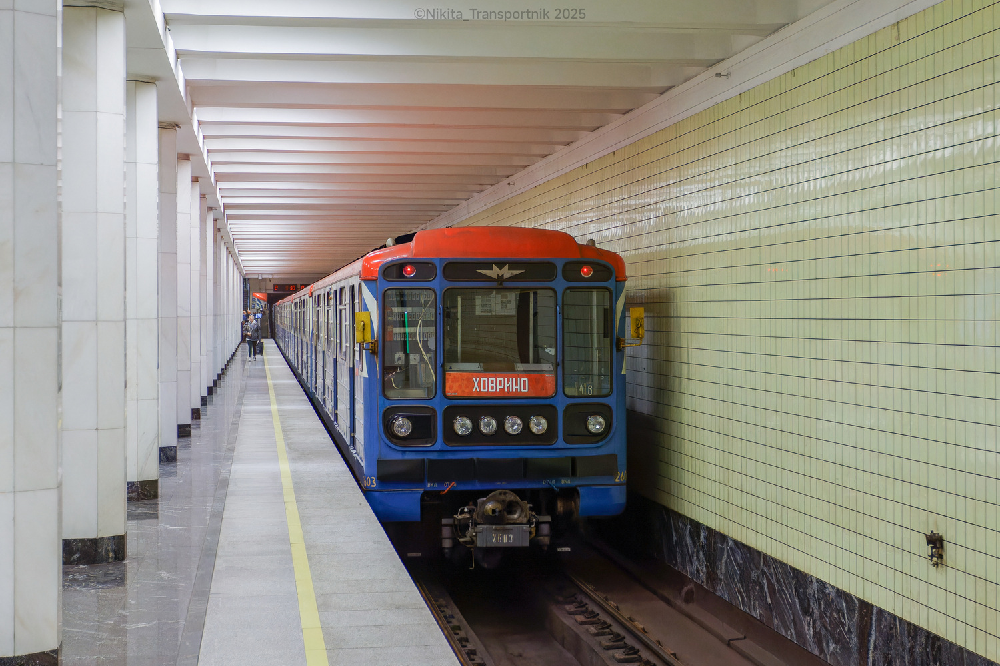
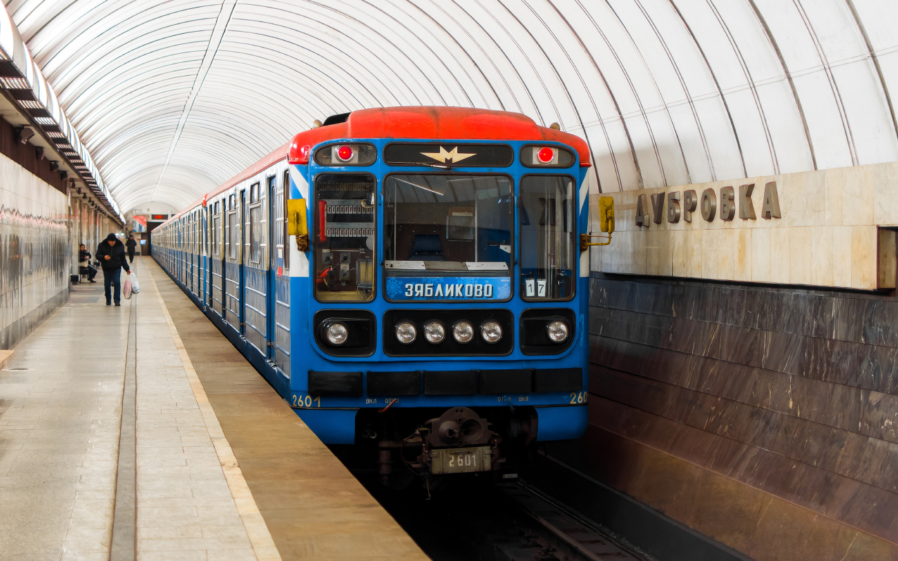

История трафаретов
Трафареты от МосСаба — это уникальное явление в оформлении поездов Московского метро. Их история началась с парадов поездов на БКЛ, когда админ телеграм-канала «Моссаб» сделал первые трафареты для парадного 81-717.
Эти трафареты были сезонными и периодически менялись. После обновления ТЧ-2 казалось, что трафаретов больше не будет, но вышли составы с новыми трафаретами от ТЧ-17 и ТЧ-15. Чёрный трафарет конца 2025 года стал отсылкой к историческому стилю вагонов типа «И» конца 70-х.
Фотогалерея
Все трафареты МосСаба — и ушедшие в историю, и ещё ходящие:

📸 Tosh Evs

📸 OFFLINE

📸 Nikita_Transportnik

📸 Romach

📸 МосСаб

📸 Tosh Evs
Нажмите на фото для увеличения
Все трафареты МосСаба
| Трафарет / Состав | Статус | Примечание |
|---|---|---|
| Зимний (НГ 2025) | Ушёл в историю | Сезонный трафарет |
| Летний | Ушёл в историю | Сезонный трафарет |
| Осенний | Ушёл в историю | Сезонный трафарет |
| Парадный ММ 89 (2025) | Ушёл в историю | Не был установлен, сгинул в «Лихоборах» |
| Чёрный (ТЧ-17) 0334-2550 | Ещё ходит | Новинка 2025, стиль отсылает к вагонам типа «И» |
| Зимний (НГ 2026 и скоро 2027) 2601-2603 | Ещё ходит | Сезонный трафарет |
«Трафареты от МосСаба стали настоящим культурным явлением среди транспортных энтузиастов. Они привнесли элемент творчества и индивидуальности в стандартный облик поездов, создавая сезонное настроение и запоминаясь пассажирам».